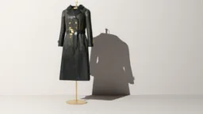
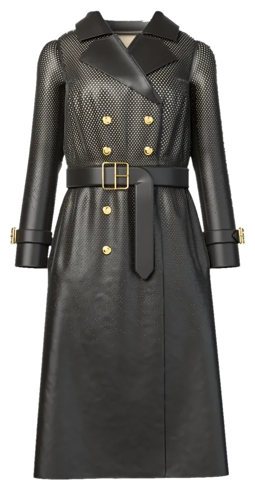
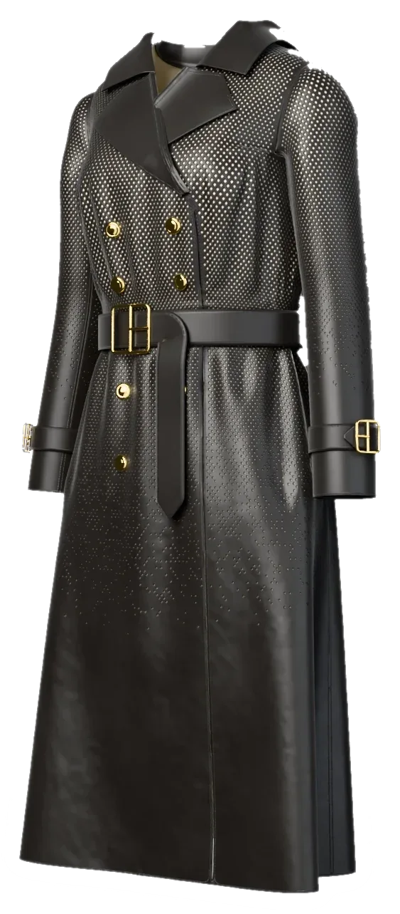
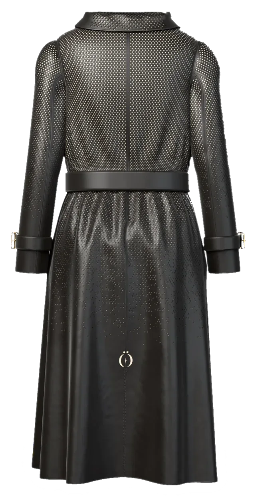
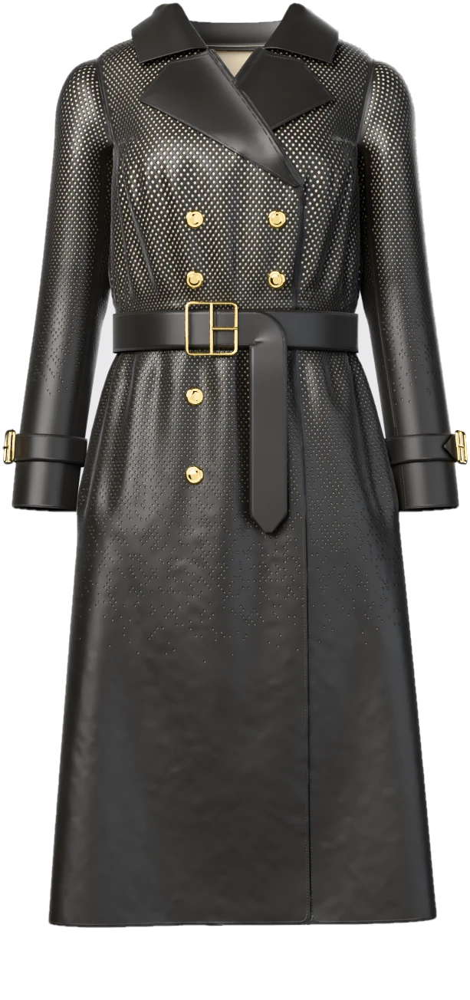
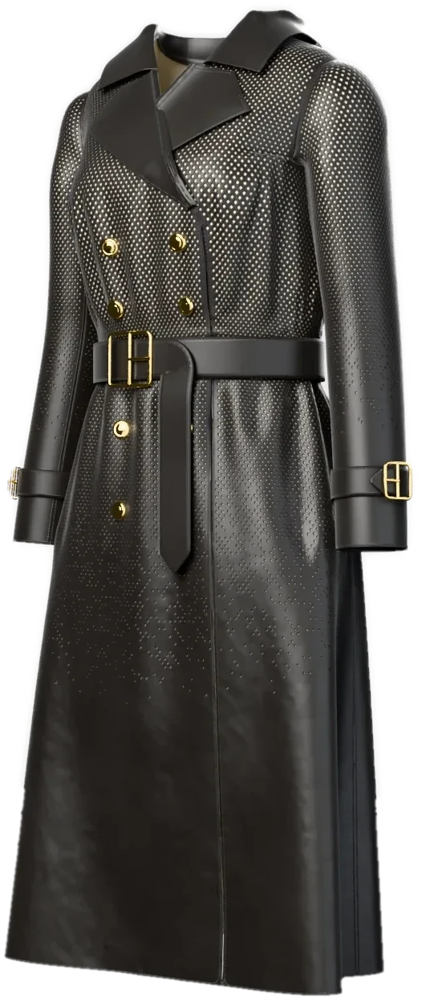
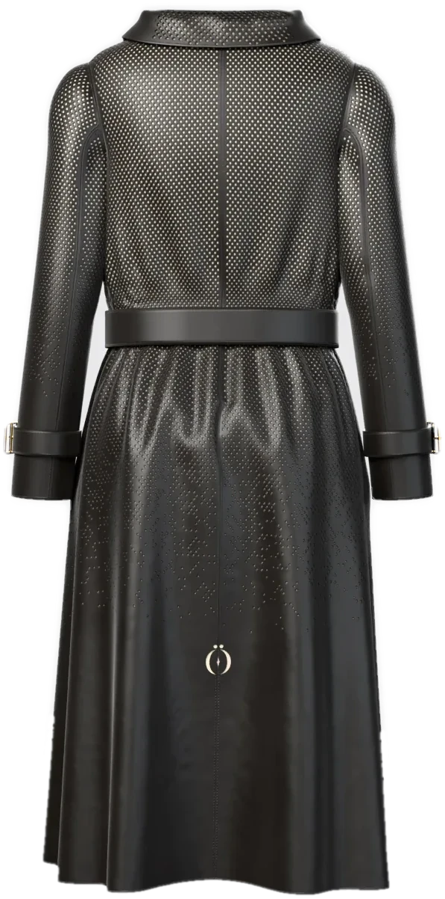
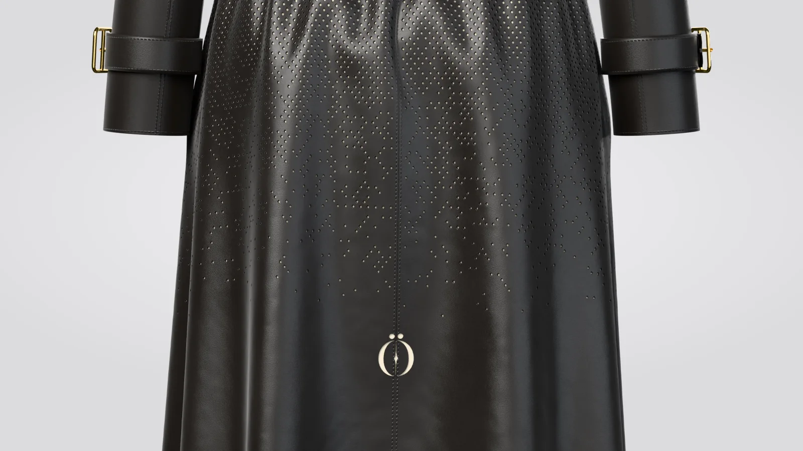
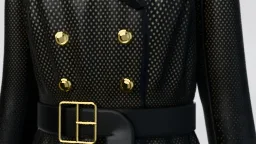

STAND-IN · img/gelosia/hero/master.* (the director’s signature shot: The net: one raking light finds the cream in every hole (story/product-stills/DIRECTOR-SHOTS.md; its 144p preview stands in); 8K, 7680 × 4320)Chapter I · Outerwear
Gelosia
Black leather coat

STAND-IN · img/gelosia/front/master.* (departments/apparel/new-pieces-2026-11/build/veil-coat/site/veil_coat_front_16k.png; 16K, 8640 × 15360)front

STAND-IN · img/gelosia/three-quarter/master.* (three-quarter view, 8K; 8K, 4320 × 7680)three quarter

STAND-IN · img/gelosia/back/master.* (back view, 8K; 8K, 4320 × 7680)back
Chapter I
Gelosia
Black leather coat
The Siren's veil, let down into a coat. The net open at the collar and shoulders, closing to solid black leather by the hem, cream silk behind it the way light waits behind a curtain.
- LEATHER
- BLACK
- LINING
- CREAM SILK, OPAQUE
- LENGTH
- MID-CALF
- SIZE
- XS · S · M · L · XL
USD 5,400 pre-sale USD 4,600
Made to order.
Keep a seatThe register sees the pre-sale first.
Details
- Pre-sale
- Made to order. We email your delivery date once production is confirmed. Cancel for a full refund any time before production starts.
- Returns
- Exchanges within 14 days of delivery, unused and with tags.
- Care
- Wipe with a soft dry cloth. Keep from rain and heat; if it gets wet, let it dry slowly away from a radiator. Store in its dust bag, stuffed with tissue, out of the light. Leather cleaning by a specialist only. Care
- Size
- The measurements
In its world
Gelosia
LEATHERBLACKLININGCREAM SILK, OPAQUELENGTHMID-CALF


Where it is going
The doors, in the snow
One door standing open, untouched.
SIZEXS · S · M · L · XLProjected sizes.
LEATHER1.0 TO 1.2 MMBlack lambskin, cut as panels on a flat bed. A net of diamonds 7.0 by 9.0 mm apart, the narrowest strand 2.7 mm.
BUTTONSEIGHT, GOLDIt closes with eight buttons, a belt and a strap at each cuff.
BELTGOLD BUCKLE
CUFFA STRAP, GOLDEvery seam and edge keeps 4.5 mm of solid leather.
LENGTHMID-CALFThe net closes to solid leather above the knee.
THE MARK40.0 MMCut at the centre back, 29 cm above the hem.
LININGCREAM SILK, OPAQUEBonded to the leather, 1.6 mm back from the face. Only cream shows through.
In the world
Gelosia
Black leather coat
The doors, in the snow
Scroll to walk around it
Close, at 100%

STAND-IN · img/gelosia/detail-net/master.* (the net closing to solid leather, 8K close-up; 8K, 7680 × 4320)The net closing to solid leather
A button and the belt
The cuff strap

STAND-IN · img/gelosia/detail-site/master.* (the net, close, 8K close-up; 8K, 7680 × 4320)The net, close
In the same scene